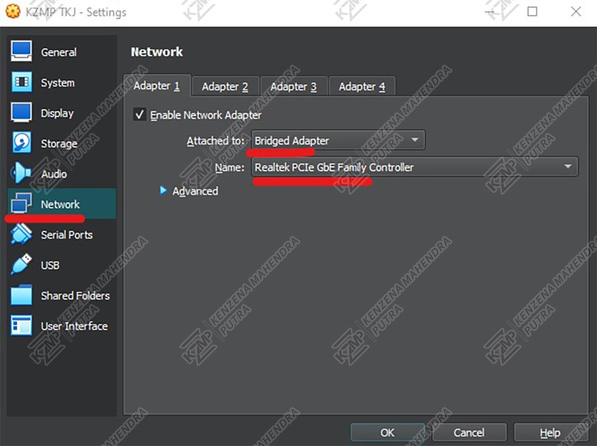
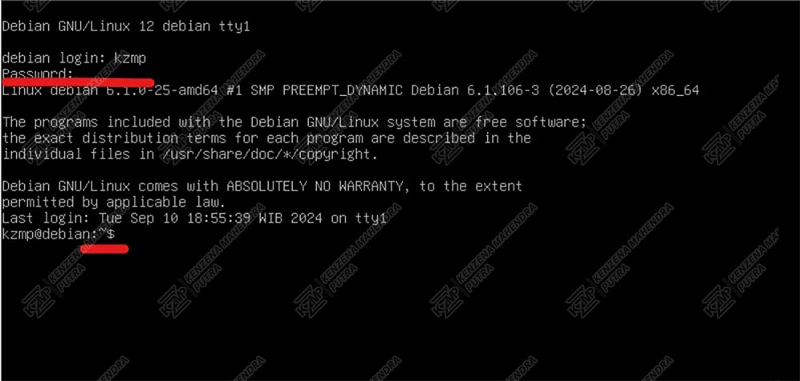
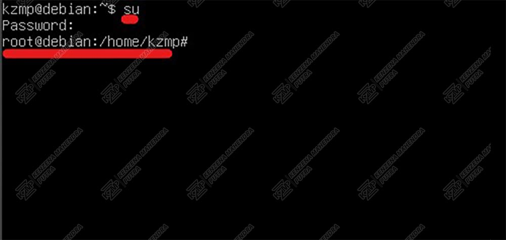

MENGATUR IP
-
Setelah membuka VirtualBox Manager, pilih proyek (mesin virtual) yang telah Anda buat. Lalu, di sudut kanan atas, klik tombol "Settings" untuk membuka konfigurasi lebih lanjut dari mesin virtual tersebut.

-
Pada menu "Network", ubah opsi "Attached to" menjadi "Bridged Adapter". Di bagian "Name", pilih jaringan Ethernet atau WiFi yang sedang Anda gunakan. Ini akan menghubungkan mesin virtual langsung ke jaringan yang sama dengan komputer host Anda.
 -
Setelah menyelesaikan konfigurasi jaringan, klik tombol "Start" pada mesin virtual Anda. Ini akan menjalankan mesin virtual dengan pengaturan jaringan yang telah disesuaikan.

-
Setelah mesin virtual dimulai, login ke akun pengguna Anda dengan memasukkan username dan password yang telah Anda buat. Anda akan tahu bahwa login berhasil ketika tanda "~$" muncul di depan hostname, menandakan Anda berada di terminal siap untuk perintah selanjutnya.
 -
ketik perintah berikut di terminal:
ip a
Lihat IP address di depan "inet", misalnya 192.168.1.6. Hafalkan alamat IP tersebut, karena itu akan digunakan untuk konfigurasi jaringan atau keperluan lainnya.

-
Untuk mengakses hak administratif, ketik perintah berikut di terminal:
su
Masukkan password Anda saat diminta. Setelah berhasil, Anda akan melihat "root" muncul sebagai bagian dari prompt di terminal, menandakan bahwa Anda telah masuk sebagai superuser.
 -
Dengan akses sebagai superuser, ketik perintah berikut untuk membaca dan mengedit file konfigurasi jaringan:
nano /etc/network/interfaces
Ini akan membuka file "interfaces" di editor teks nano, memungkinkan Anda untuk melihat dan mengubah pengaturan jaringan sesuai kebutuhan.

-
Di dalam editor nano, tambahkan baris-baris berikut di bagian bawah file:
address 192.168.1.6
netmask 255.255.255.0
gateway 192.168.1.1Gantilah 192.168.1.6 dengan IP address Anda yang sebelumnya yang terdapat di "ip a", dan untuk gateway bisa mengganti IP address paling belakang menjadi 1.
Setelah selesai, tekan Ctrl + X untuk keluar dari nano. Kemudian tekan Y untuk menyimpan perubahan, dan Enter untuk mengonfirmasi.

-
Tekan "Y" untuk mengonfirmasi "Yes" dalam "Save modified buffer". Kemudian, tekan Enter untuk menyimpan perubahan pada file.


-
Setelah menyimpan perubahan pada file konfigurasi, ketik perintah berikut di terminal untuk menguji koneksi internet:
ping google.com
Ini akan mengirimkan paket data ke google.com dan menampilkan respons jika koneksi internet Anda berfungsi dengan baik.